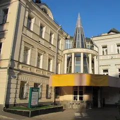
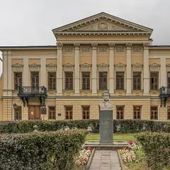

Подборка редакции · Москва
Красивые библиотеки и книжные
Где читать, работать и фотографироваться среди книг: усадьба со стеклянным атриумом у Чистых прудов, особняк с каминами на Спартаковской, книжный в палатах XVII века и «Подписные издания» в музее импрессионизма. В библиотеки вход бесплатный по читательскому билету.
- 5 мест
- до 1 500 ₽ на человека
Что в подборке 5

Бобров пер., 6, стр. 1
Новое
Библиотека в отреставрированной усадьбе у Чистых прудов: деревянные залы, винтовая лестница и стеклянный атриум с роялем. Читать и работать можно бесплатно по читательскому билету.
Подробнее и маршрут: Библиотека-читальня им. ТургеневаПозвать сюда: Библиотека-читальня им. Тургенева
Фото: Vladimir OKC, общественное достояние · Wikimedia Commons

Спартаковская ул., 9, стр. 3
Новое
Старинный особняк с чугунной лестницей, каминами и белыми гостиными — читальный зал, где хочется остаться на весь день. Вход свободный, бывают лекции и концерты.
Подробнее и маршрут: Библиотека-читальня им. ПушкинаПозвать сюда: Библиотека-читальня им. Пушкина
Фото: A.Savin, Free Art License · Wikimedia Commons
Подколокольный пер., 11/11, стр. 1
Книжный и кафе в жилых палатах XVII века на Хитровке, кабинет графики.
Ленинградский пр., 15, стр. 11
Книжный на третьем этаже Музея импрессионизма с видом на город. Вход по браслету, без билета.
Подробнее и маршрут: Подписные изданияПозвать сюда: Подписные издания
Фото: Sergey A. Demidov, CC BY 4.0 · Wikimedia Commons
Яузская ул., 1/15, стр. 1
Петербургская галерея открыла в усадьбе Филипповых книжный об искусстве, кино и архитектуре, кабинет графики и кофейню. Есть каталоги зарубежных музеев и винил.
Подробнее и маршрут: KGallery BookcafeПозвать сюда: KGallery Bookcafe
Фото: Никонико962, CC BY-SA 4.0 · Wikimedia Commons


Как позвать
- Выбери план, место или событие — в карточке адрес, цены и маршрут в Яндекс Картах.
- Нажми «Позвать сюда» — соберётся приглашение-игра для свидания или голосование для компании.
- Отправь ссылку в любой мессенджер: тебе ответят, а компания отметит, куда и когда может. Бесплатно и без регистрации.